Project Overview
Role: Website/UI Designer, Prototype Developer
Collaborator:
Zilin Zhang - Website/UI Designer, Content Developer
Tools Used:
- Figma
- Photoshop
- Premiere Pro
Duration: 1 Months (November 2023 - December 2023)
Project Video
Project Description
The SUIGENKYO website design project was developed for IAT 235 Information Design at SFU's Interactive Arts and Technology program. The goal was to enhance the webpage by bringing the craftsmanship behind the products to the forefront, aligning with the corporation's core mission.
By identifying design challenges, optimizing user flow, analyzing shopping behaviors, incorporating content marketing strategies, and applying visual principles, we refined the website to create a smoother, faster, and more engaging purchasing experience. The redesign also introduced new ways for customers to explore the artisans' untold stories, the history and materials behind their products, and their dedication to their craft.
My Main Tasks in This Project:
- Optimizing User Flow
- UI Design Choices
- Website Prototype, Graphics, and Effects
Optimizing User Flow
To enhance the focus on the brand's craftsmanship and cultural value, the website underwent a comprehensive redesign from the initial wireframes to the final user flow. By strategically highlighting elements essential to the brand's identity, the new design guides users through a culturally enriched journey, spotlighting the craftsmanship and stories behind each product.
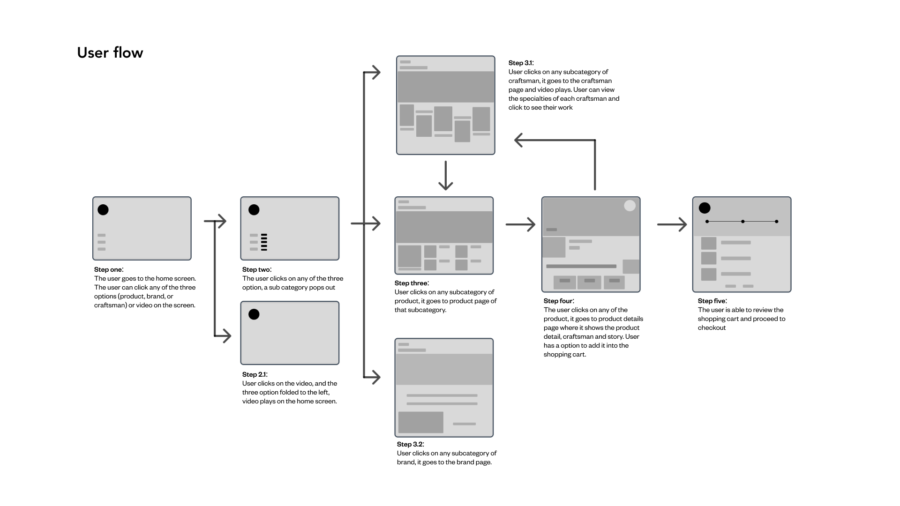A carefully designed user flow ensures that each navigation step—from the home page to checkout—is intuitive and culturally informative. The design includes detailed pages for products, brands, and craftsmen, allowing users to delve into the rich cultural context behind each craft. This approach not only streamlines the user experience but also minimizes cognitive load by simplifying navigation and enhancing visual communication. Decisions were made to emphasize cultural symbols and motifs through visual elements such as icons and color schemes, which resonate with the brand's heritage and values. This thoughtful presentation enhances user engagement, encouraging deeper appreciation of the craftsmanship and cultural narratives that define the brand.
UI Design Choices
 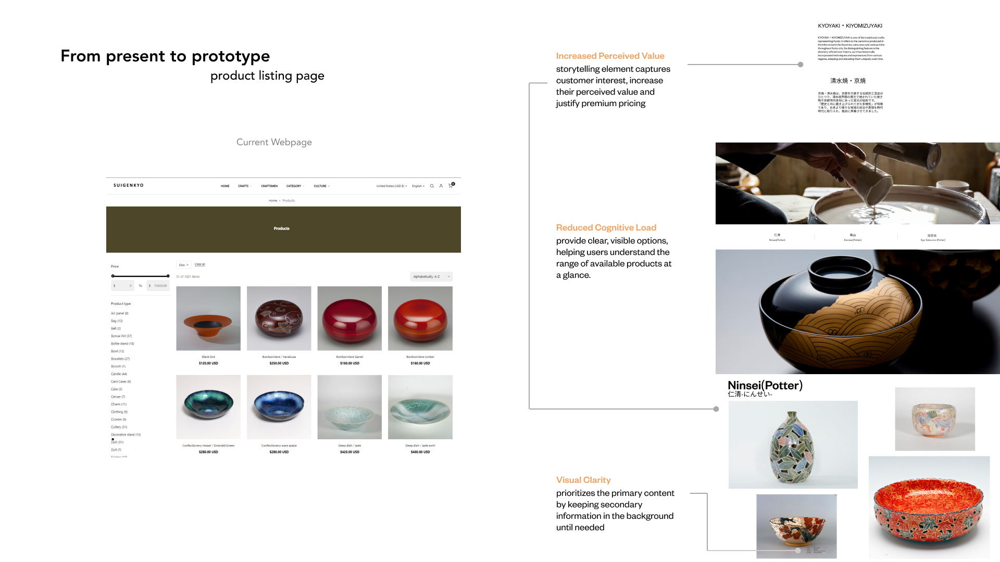
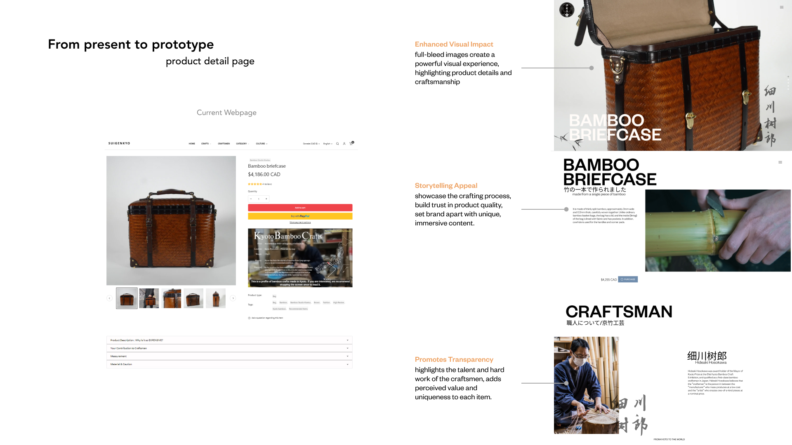
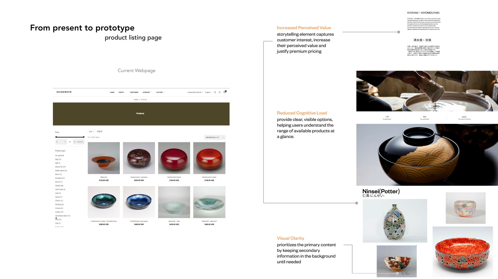
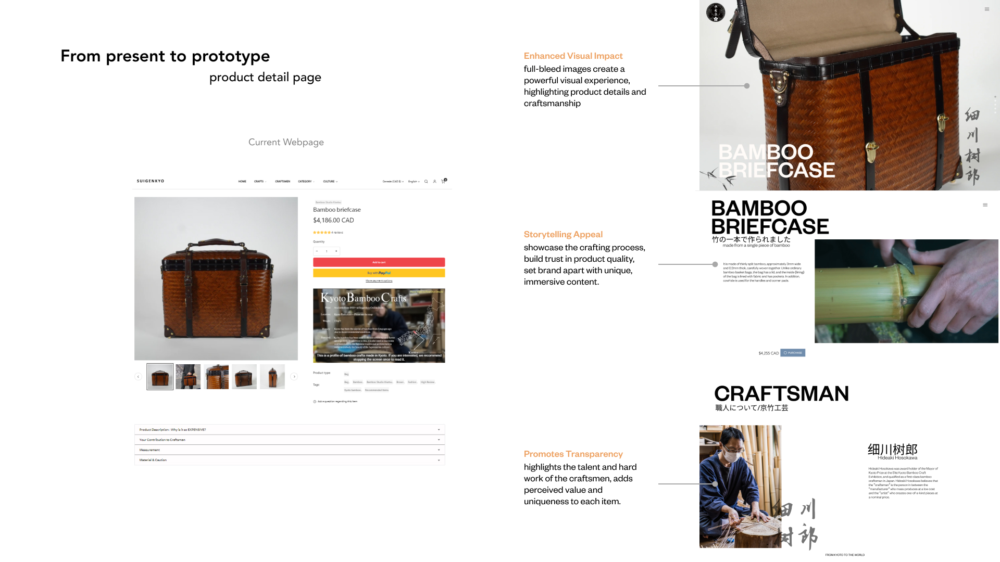
 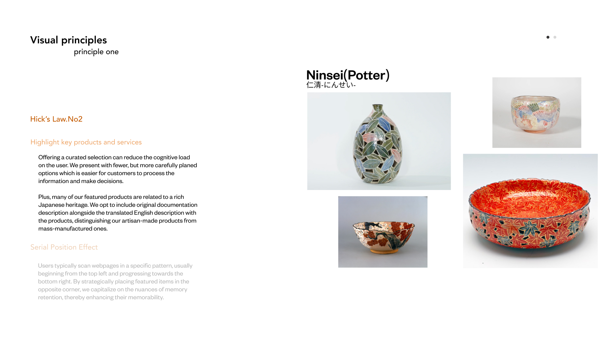
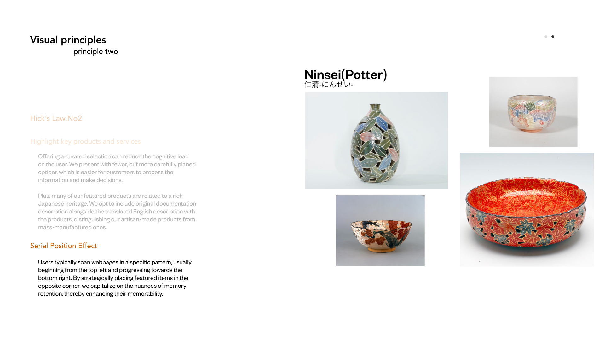
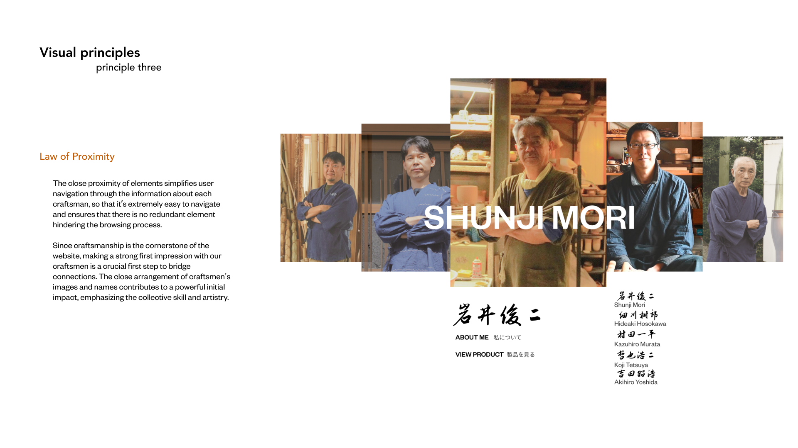
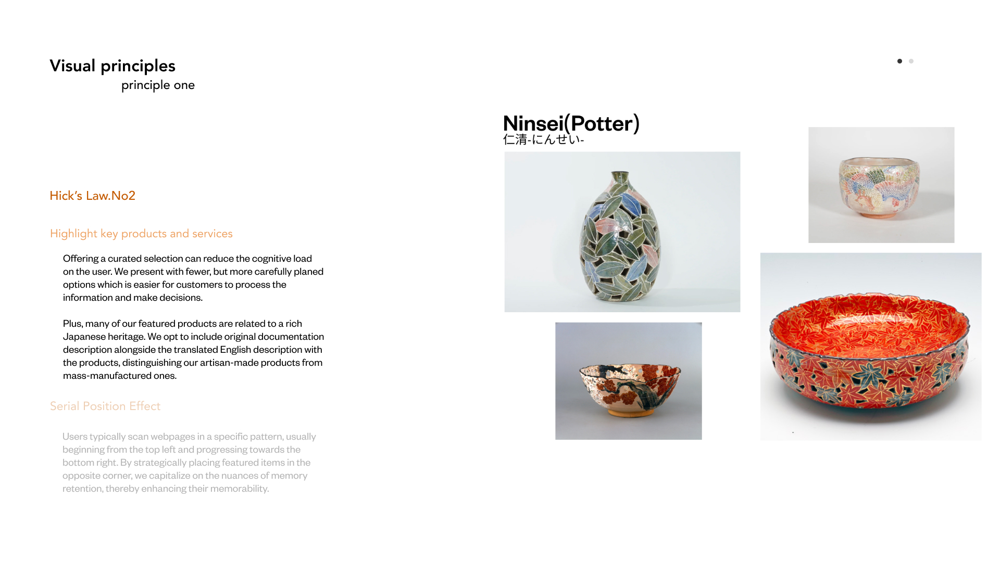
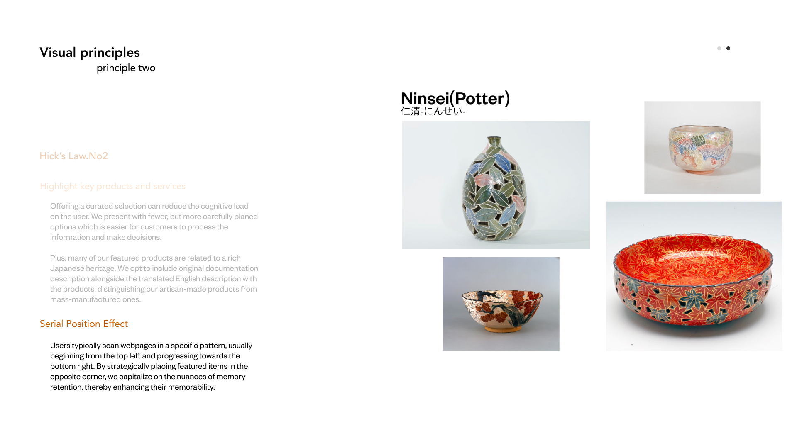
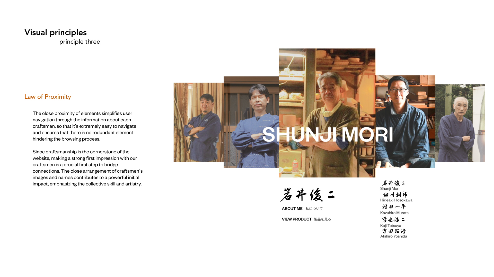
 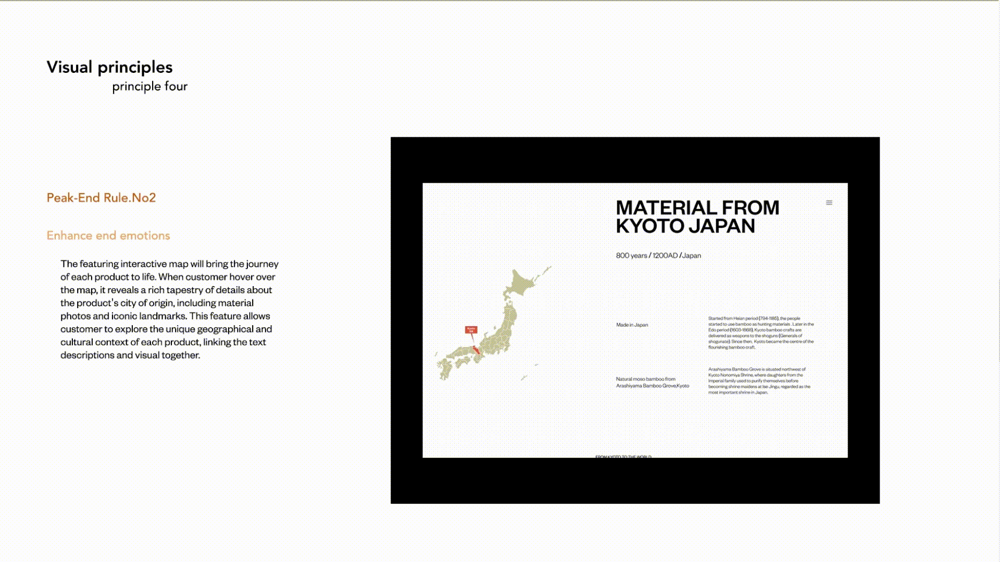
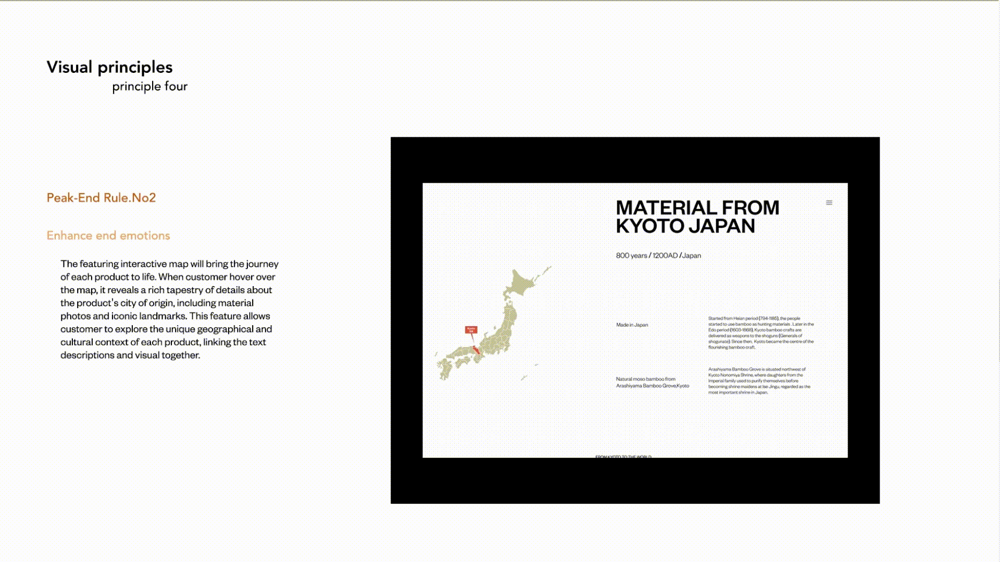
To guide user attention, enhance engagement, and smoothen the user experience while improving the website's functionality, we integrated several visual principles, including Hick's Law, the Law of Proximity, and the Peak-End Rule. These carefully chosen principles allow us to effectively communicate the brand's core values and cultural richness, reduce cognitive load, and simplify decision-making for the user. By streamlining navigation and strategically placing key products and content, we ensure a coherent and memorable journey through the site. Additionally, these principles help highlight the craftsmanship and heritage of our products, increasing their perceived value and distinguishing our offerings in a saturated market. This thoughtful integration enhances both the aesthetic and functional aspects of the website, leading to a more intuitive and engaging user experience.
Website Prototype and Interactions
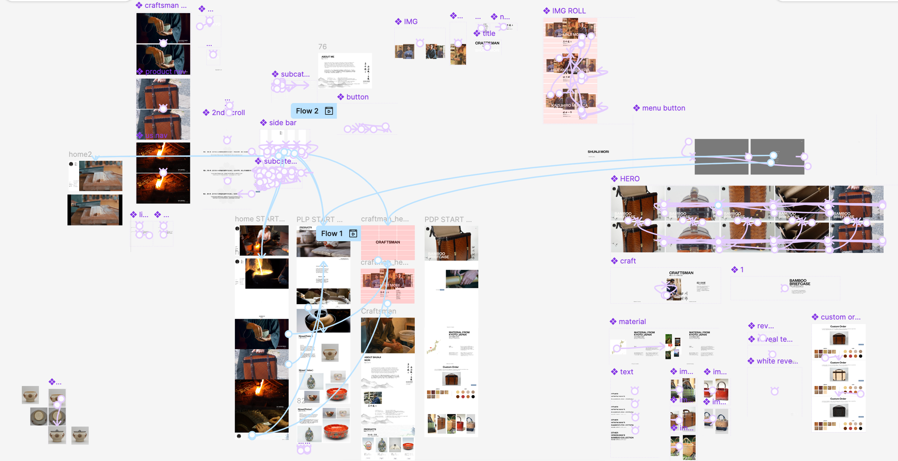Figma was utilized to develop an interactive prototype for the website, meticulously crafting everything from minor interaction effects to the overall functionality. Each design decision was deliberately considered and practiced, with the ultimate choice aimed at engaging customers and refining their shopping experience.
Takeaways
Overall, I am grateful to have been part of this project alongside my amazing group partner. Through this experience, I significantly advanced my skills in UI/UX design, particularly using Figma to craft detailed prototypes that featured dynamic interactions, effectively showcasing our design solutions to clients. By integrating my prior knowledge of human cognition and visual design principles, I was able to optimize the user interface to enhance navigability and clarity by structuring content to reduce cognitive load, ensuring users could easily navigate the site and make informed decisions. This approach played a crucial role in simplifying navigation, highlighting key products, and creating a smooth browsing experience that strengthened user engagement and reinforced the brand's cultural values. Each design choice was meticulously aligned to improve usability and enhance the storytelling aspect, which allowed users to form a stronger emotional connection with the craftsmanship behind each product and cohesively supported the brand's identity and user needs.